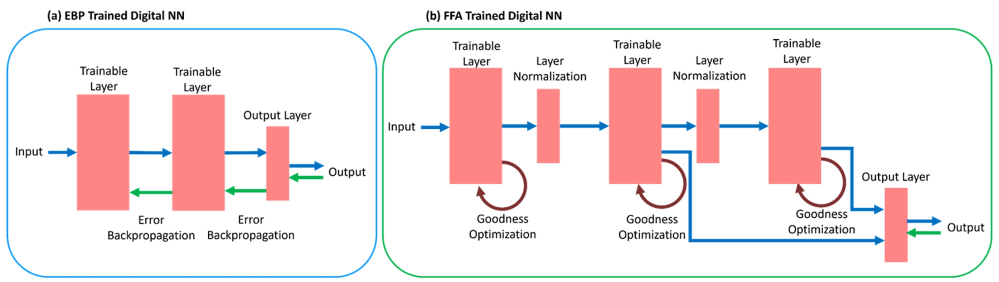
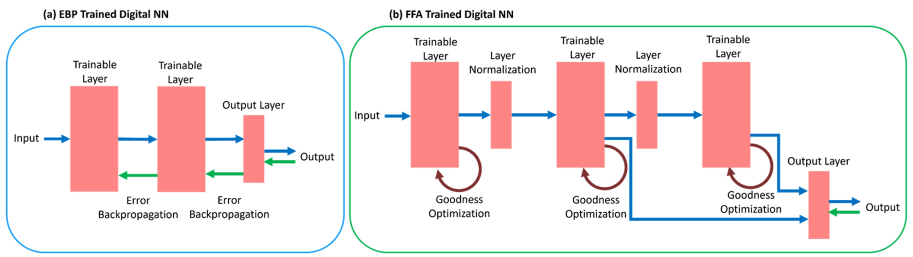

Preliminary Research and Work Experiences
2/2022 - 9/2022
Research Assistant of Quantum Academy Details
Select-major Period
Adjustment of precision instruments and assisting in observational studies.Quantum Academy of SUSTech, Shen Zhen, Guang Dong, China
6/2022 - 12/2023

Improve the performance of Forward-forward algorithm by Geoffrey Hinton. Implement the algorithm into memrister crossbar.
Evolutionary Forward-forward Details
Research Assistant

Improve the performance of Forward-forward algorithm by Geoffrey Hinton. Implement the algorithm into memrister crossbar.
Under the guidance of Professor Xin Yao, Lingnan University, Hong Kong, China and Professor Xinming Shi, Queen's University Belfast, Northern Ireland, United Kingdom
6/2023 - 6/2024

Find usage of evolutionary algorithms on online imbalanced problems both data-level and algorithm-level. Final report was structured to a paper, namely Threshold Moving for Online Class Imbalance Learning with Dynamic Evolutionary Cost Vector, have been accpeted by TMLR at https://openreview.net/forum?id=EIPnUofed9.
Evolutionary Online imbalanced dataset Details
For Academic Credit
Find usage of evolutionary algorithms on online imbalanced problems both data-level and algorithm-level. Final report was structured to a paper, namely Threshold Moving for Online Class Imbalance Learning with Dynamic Evolutionary Cost Vector, have been accpeted by TMLR at https://openreview.net/forum?id=EIPnUofed9.
Under the guidance of Professor Siang Yew Chong, SUSTech, Shen Zhen, Guang Dong, China